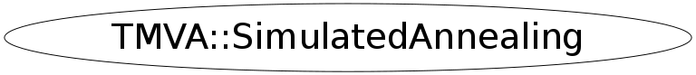

Function Members (Methods)
public:
| virtual | ~SimulatedAnnealing() |
| static TClass* | Class() |
| virtual TClass* | IsA() const |
| Double_t | Minimize(vector<Double_t>& parameters) |
| void | SetAccuracy(Double_t eps) |
| void | SetAdaptiveSpeed(Double_t speed) |
| void | SetInitTemp(Double_t it) |
| void | SetMaxCalls(Int_t mc) |
| void | SetMinTemp(Double_t min) |
| void | SetOptions(Int_t maxCalls, Double_t initialTemperature, Double_t minTemperature, Double_t eps, TString kernelTemperatureS, Double_t temperatureScale, Double_t adaptiveSpeed, Double_t temperatureAdaptiveStep, Bool_t useDefaultScale, Bool_t useDefaultTemperature) |
| void | SetTemperatureScale(Double_t scale) |
| virtual void | ShowMembers(TMemberInspector& insp) |
| TMVA::SimulatedAnnealing | SimulatedAnnealing(const TMVA::SimulatedAnnealing&) |
| TMVA::SimulatedAnnealing | SimulatedAnnealing(TMVA::IFitterTarget& target, const vector<TMVA::Interval*>& ranges) |
| virtual void | Streamer(TBuffer& b) |
| void | StreamerNVirtual(TBuffer& b) |
private:
| void | FillWithRandomValues(vector<Double_t>& parameters) |
| Double_t | GenerateMaxTemperature(vector<Double_t>& parameters) |
| vector<Double_t> | GenerateNeighbour(vector<Double_t>& parameters, Double_t currentTemperature) |
| void | GenerateNeighbour(vector<Double_t>& parameters, vector<Double_t>& oldParameters, Double_t currentTemperature) |
| void | GenerateNewTemperature(Double_t& currentTemperature, Int_t Iter) |
| TMVA::MsgLogger& | Log() const |
| void | ReWriteParameters(vector<Double_t>& from, vector<Double_t>& to) |
| void | SetDefaultScale() |
| Bool_t | ShouldGoIn(Double_t currentFit, Double_t localFit, Double_t currentTemperature) |
Data Members
public:
| enum EKernelTemperature { | kSqrt | |
| kIncreasingAdaptive | ||
| kDecreasingAdaptive | ||
| kLog | ||
| kHomo | ||
| kSin | ||
| kGeo | ||
| }; |
private:
| Double_t | fAdaptiveSpeed | how fast temperature change in adaptive (in adaptive two variables describe |
| Double_t | fEps | epsilon |
| TMVA::IFitterTarget& | fFitterTarget | the fitter target |
| Double_t | fInitialTemperature | initial temperature |
| TMVA::SimulatedAnnealing::EKernelTemperature | fKernelTemperature | |
| TMVA::MsgLogger* | fLogger | message logger |
| Int_t | fMaxCalls | maximum number of minimisation calls |
| Double_t | fMinTemperature | mimimum temperature |
| Double_t | fProgress | |
| TRandom* | fRandom | random generator |
| const vector<TMVA::Interval*>& | fRanges | parameter ranges |
| Double_t | fTemperatureAdaptiveStep | used to calculate InitialTemperature if fUseDefaultTemperature |
| Double_t | fTemperatureScale | how fast temperature change |
| Bool_t | fUseDefaultScale | if TRUE, SA calculates its own TemperatureScale |
| Bool_t | fUseDefaultTemperature | if TRUE, SA calculates its own InitialTemperature (MinTemperautre) |
Class Charts
{kind=link}
{kind=link}
{kind=link}
{kind=link}

Function documentation
void SetOptions(Int_t maxCalls, Double_t initialTemperature, Double_t minTemperature, Double_t eps, TString kernelTemperatureS, Double_t temperatureScale, Double_t adaptiveSpeed, Double_t temperatureAdaptiveStep, Bool_t useDefaultScale, Bool_t useDefaultTemperature)
option setter
void GenerateNeighbour(vector<Double_t>& parameters, vector<Double_t>& oldParameters, Double_t currentTemperature)
generate adjacent parameters
std::vector<Double_t> GenerateNeighbour(vector<Double_t>& parameters, Double_t currentTemperature)
generate adjacent parameters
Bool_t ShouldGoIn(Double_t currentFit, Double_t localFit, Double_t currentTemperature)
result checker
SimulatedAnnealing(TMVA::IFitterTarget& target, const vector<TMVA::Interval*>& ranges)